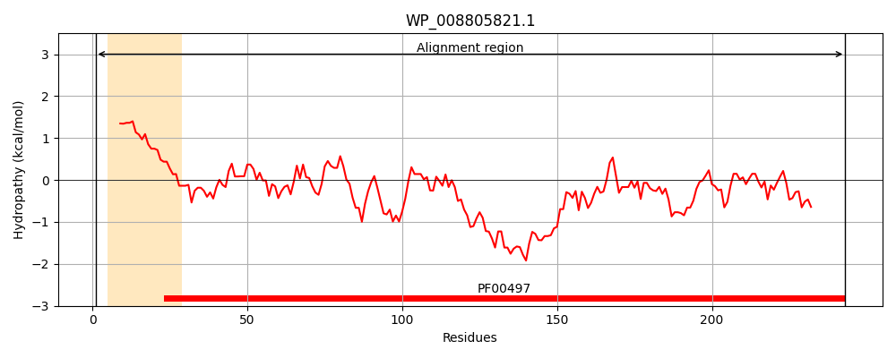
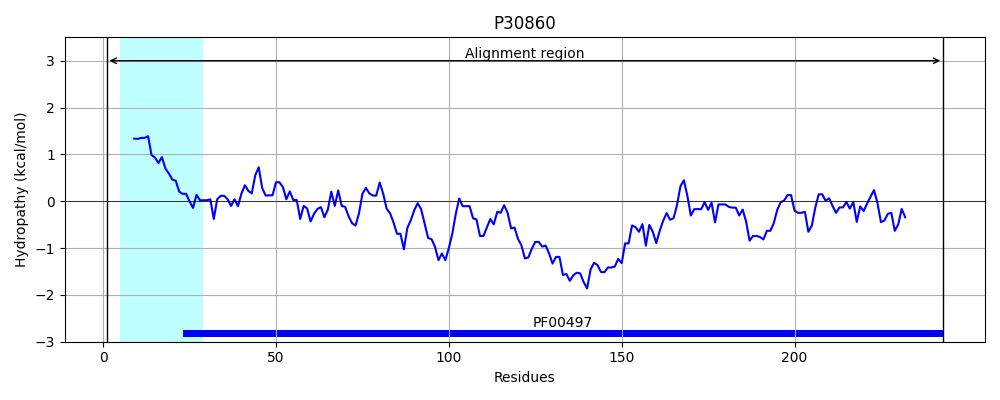
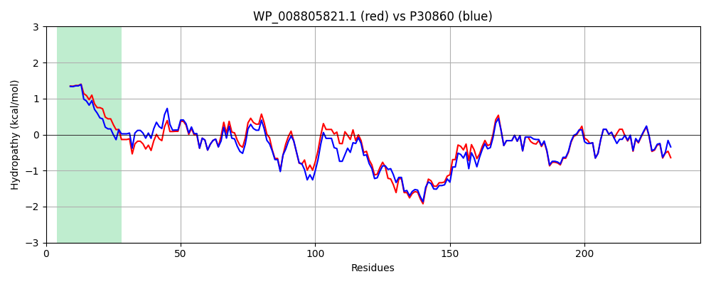

Hit Accession: P30860
Hit TCID: 3.A.1.3.3
Hit Description: gnl|BL_ORD_ID|9732 gnl|TC-DB|P30860|3.A.1.3.3 Arginine-binding periplasmic protein 2 precursor - Escherichia coli.
Mach Len: 243
e:0.000000
Query TMS Count : 1
Hit TMS Count: 1
TMS-Overlap Score: 1.250000
Predicted Substrates:CHEBI:2643;arginine
BLAST Alignment:
Score: 1133 , Bit scores: 441 bits, E-value: 2.2e-159, Alignment length: 243, Percentage identity: 88
Query: 1 MKKLVLAALLTTFTFGAAAAEKISFGVSATYPPFESMDANNQIVGFDLDLAKALCKQMQAECTFTNHAFDSLIPALKFKKYDAVISGMDITPERSKQVAFTDPYYANSALVIAKKDAFHSFDDLKGKRIGMENGTTHQKYLQDKHPEVKTVAYDSYQNAIIDLKNGRIDGVFGDTAVVNEWLKTNPQLGAATPKVTDPQYFGTGLGIAVRPDNKALLEKLNAALKAIKADGTYQKISNQWFPE 243
MKKLVLAALL +FTFGA+AAEKI+FGVSATYPPFES+ ANN+IVGFD+DLAKALCKQMQAECTFTNHAFDSLIP+LKF+KYDAVISGMDITPERSKQV+FT PYY NSA+VIAKKD + +F DLKGKRIGMENGTTHQKY+QD+HPEVKTV+YDSYQNA IDLKNGRIDGVFGDTAVVNEWLKTNPQLG AT KVTDPQYFGTGLGIAVRPDNKALLEKLN AL AIKADGTYQKIS+QWFP+
Sbjct: 1 MKKLVLAALLASFTFGASAAEKINFGVSATYPPFESIGANNEIVGFDIDLAKALCKQMQAECTFTNHAFDSLIPSLKFRKYDAVISGMDITPERSKQVSFTTPYYENSAVVIAKKDTYKTFADLKGKRIGMENGTTHQKYIQDQHPEVKTVSYDSYQNAFIDLKNGRIDGVFGDTAVVNEWLKTNPQLGVATEKVTDPQYFGTGLGIAVRPDNKALLEKLNNALAAIKADGTYQKISDQWFPQ 243 | Protein Hydropathy Plots: |
|---|
|  |  |
Pairwise Alignment-Hydropathy Plot:
|
|---|
|  |